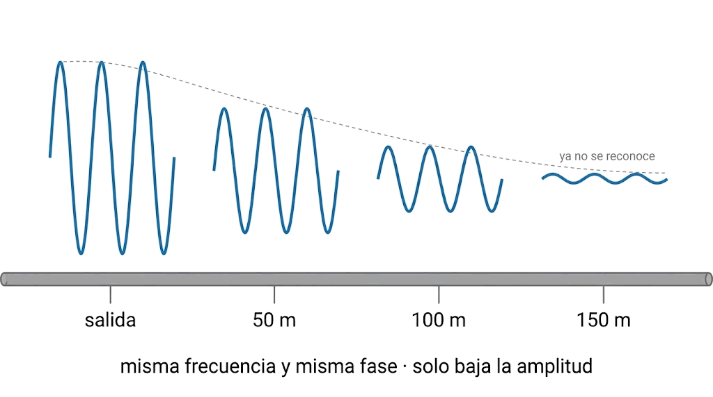
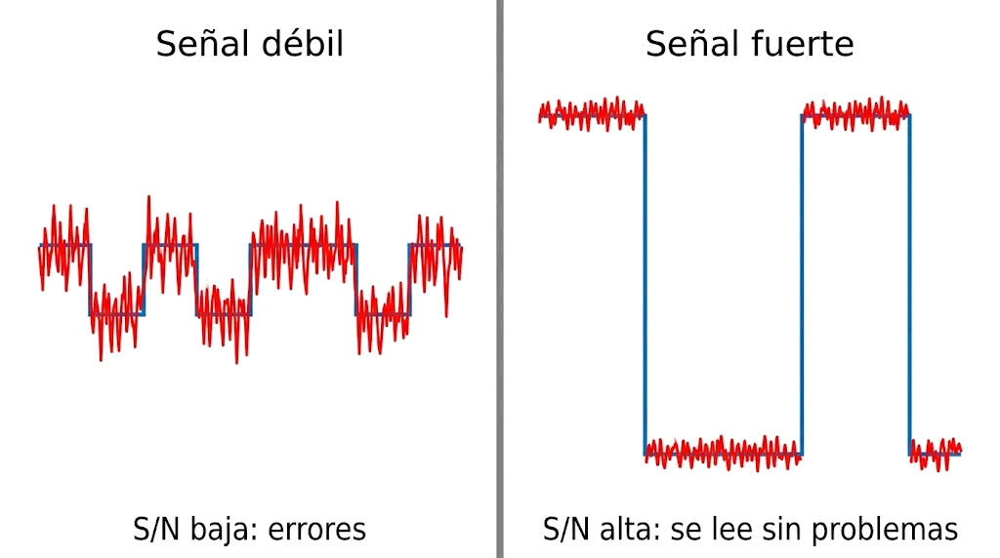

Contenido del día
1. Cuándo hay un error de transmisión
Al atravesar un medio, la señal que llega nunca es exactamente la que salió. El libro de la asignatura lo plantea así:
Si la diferencia entre la señal enviada y la recibida es pequeña, el receptor la interpreta bien. Si es demasiado grande, la interpreta mal: se produce un error de transmisión.
No todas las señales ni todos los medios sufren igual. Por eso, cuando se puede, se elige con cuidado la combinación de señal y medio que da mejores condiciones. Para elegir hay que conocer los problemas.
2. La atenuación
Es el problema más importante a largas distancias: la pérdida de amplitud de la señal a medida que avanza. Igual que un sonido se oye más débil cuanto más lejos está.
- Su efecto es proporcional a la longitud del cable. A partir de cierta distancia, la señal es tan débil que no se reconoce.
- No cambia la frecuencia ni la fase: solo reduce la amplitud.
- En el cobre, el currículo de Cisco la atribuye a la impedancia del cable: cuanto más recorre la señal, más se deteriora.

salida a 50 m a 100 m a 150 m
╭─╮ ╭─╮ ╭╮ ╭╮
│ │ │ │ ││ ││ ∩ ∩ ∩ ‿‿‿‿‿ ← ya no se reconoce
─╯ ╰─╯ ╰─ ─╯╰──╯╰─ ──╯╰─╯╰── ─────
misma frecuencia, misma fase · solo baja la amplitudCómo se combate
Colocando en el camino dispositivos activos que devuelven a la señal la amplitud perdida:
| Señal | Dispositivo | Qué hace |
|---|---|---|
| Digital | Repetidor | Restaura la señal original: la amplifica y elimina el ruido añadido |
| Analógica | Amplificador | La amplifica, ruido incluido |
| Inalámbrica | Punto de acceso | Hace de repetidor para las redes sin cables |
Es la misma diferencia entre regenerar y amplificar que viste en la Semana 4.
3. Los decibelios
La atenuación, y también el ruido, se miden en decibelios (dB). Es una unidad que expresa una relación entre dos potencias, en escala logarítmica:
Se usa porque las relaciones reales van de 2 a 10 000 000, y en decibelios caben en números manejables: de 3 a 70.
| Relación de potencias | En dB | Cómo recordarlo |
|---|---|---|
| × 2 | ≈ 3 dB | 3 dB es el doble |
| × 10 | 10 dB | Cada 10 dB, un cero más |
| × 100 | 20 dB | |
| × 1 000 | 30 dB | |
| × 10 000 | 40 dB | El ejemplo del libro |
| × 1/2 | ≈ −3 dB | La mitad |
| × 1/100 | −20 dB | Queda el 1 % |
4. Diafonía, interferencias y ruido impulsivo
La atenuación quita señal. Las perturbaciones de este apartado añaden algo que no estaba.
| Perturbación | Qué es | Ejemplo |
|---|---|---|
| Diafonía (crosstalk) | Interferencia entre dos hilos de cobre próximos: la señal de uno se «cuela» en el otro por inducción electromagnética | Oír de fondo otra conversación en el teléfono |
| EMI y RFI | Interferencia electromagnética y de radiofrecuencia, de fuentes externas | Ondas de radio, luces fluorescentes, motores eléctricos |
| Ruido impulsivo | Pulsos breves, irregulares y de gran amplitud, aleatorios y casi siempre externos | Una moto que pasa junto a una radio; una lavadora o un frigorífico que arrancan el motor |
| Ruido térmico | El que producen los propios componentes por el simple hecho de estar a una temperatura. Está siempre y no se puede eliminar | El «fondo» de cualquier canal |
Cómo se combaten
- Trenzando los pares, lo que el currículo de Cisco llama anulación: en dos hilos juntos los campos eléctricos son opuestos y se contrarrestan. Variar el número de vueltas de cada par reduce además la diafonía entre pares. Lo viste en la Semana 2.
- Apantallando el cable, con una malla o una lámina metálica.
- Usando fibra óptica, que según Cisco es inmune a EMI y RFI: la luz no se ve afectada por los campos electromagnéticos.
5. La relación señal/ruido
Aquí está la idea clave del día. El ruido no afecta igual a todas las señales. El libro lo explica con un ejemplo muy claro:
Unos picos de ruido de 1 V estropean mucho una señal de 1 V, pero apenas afectan a una de 100 V. Igual que un teléfono que suena en un concierto pasa desapercibido, y en una sala en silencio no.

SEÑAL DÉBIL SEÑAL FUERTE
┌────────┐ ┌────────
┌~~~~┐ ┌~~~~┐ ← el ruido │ │ │
~~┘ └~~~┘ └~~ casi la tapa │ │ │ ← el mismo ruido
│ │ │ apenas se nota
───┘ └──────┘
S/N baja: errores S/N alta: se lee sin problemasLo que importa no es el ruido, sino cuánto más fuerte es la señal que el ruido. Eso es la relación señal/ruido, que se escribe S/N:
Y en decibelios: (S/N)dB = 10 · log10(S/N)
Una S/N de 40 dB significa que la señal es 10 000 veces más potente que el ruido.
Cuanto mayor es la S/N, mejor. Con una S/N baja, el ruido mueve la señal lo suficiente para que el receptor confunda un valor con otro. Y ahora se entiende la tarea de ayer:
💡 Ampliación: potencias y amplitudes
El libro ilustra la S/N con amplitudes para simplificar: una señal de 3 V con un ruido de 2 V da una relación de 1,5; una de 20 V, una de 10. La conclusión es correcta: la segunda soporta mucho mejor el ruido.
En sentido estricto, la S/N es una relación de potencias, y la potencia crece con el cuadrado de la amplitud. Para los cálculos de hoy basta con recordar la fórmula de arriba y trabajar siempre con potencias.
6. Nyquist: la capacidad de un canal ideal
En 1924, Harry Nyquist calculó la velocidad máxima de un canal ideal: sin ruido ni distorsión, pero con un ancho de banda limitado.
C = 2 · W · log2(M)
C: capacidad máxima, en bps · W: ancho de banda del canal, en Hz · M: número de niveles de la señal
El ejemplo del libro: un canal sin ruido de 3 kHz con una señal binaria (M = 2) no puede superar 2 × 3 000 × 1 = 6 000 bps.
La fórmula junta los dos primeros días de la semana:
- El factor 2 · W son los símbolos por segundo que caben en el canal: el lunes viste que el ancho de banda limita los cambios.
- El factor log2(M) son los bits de cada símbolo: el martes viste que más niveles llevan más bits.
En la Semana 1 apareció como teorema del muestreo: para reconstruir una señal hay que tomar al menos dos muestras por cada ciclo de su frecuencia máxima. Aquí es la misma idea vista al revés: en un canal de ancho W caben, como mucho, 2W símbolos por segundo.
7. Shannon: la capacidad de un canal real
En 1948, Claude Shannon llevó el trabajo de Nyquist al caso real: un canal con ruido aleatorio.
C = W · log2(1 + S/N)
S/N va en valor lineal, no en decibelios. Si te la dan en dB, conviértela primero.
El ejemplo del libro: un canal de 4 000 Hz con una S/N de 3 dB, que en lineal es 2, nunca puede transmitir mucho más de:
C = 4 000 · log₂(1 + 2) = 4 000 · log₂(3) ≈ 4 000 · 1,585 ≈ 6 340 bps ≈ 6,3 kbpsY el libro añade la frase importante: sin importar cuántos niveles de señal se usen.
Shannon no tiene M: el número de niveles no aparece. Por muchos puntos que pongas en la constelación, la capacidad no supera ese valor. Lo que la limita es el ancho de banda y la relación señal/ruido.
Los dos límites a la vez
En un caso real se calculan los dos y manda el menor:
Canal de 3 000 Hz, señal de 16 niveles, S/N de 20 dB (lineal 100)
Nyquist: 2 · 3 000 · log₂(16) = 24 000 bps ← lo que permiten los niveles
Shannon: 3 000 · log₂(1 + 100) ≈ 19 975 bps ← lo que permite el ruido
───────────
Capacidad real, como mucho: ≈ 20 000 bps manda ShannonPruébalo con el canal de abajo. Baja la S/N y observa a la vez dos cosas: cuándo aparecen los errores y cómo cae la capacidad de Shannon.
8. Resumen y errores frecuentes
- Atenuación: pérdida de amplitud proporcional a la distancia. Se combate con repetidores y amplificadores.
- Diafonía, EMI, RFI y ruido impulsivo añaden señal que no estaba. Se combaten trenzando, apantallando o usando fibra.
- dB = 10 · log10(relación). 3 dB es el doble; cada 10 dB, un cero más. Los dB se suman.
- Lo que importa es la S/N: cuánto más fuerte es la señal que el ruido.
- Nyquist, canal ideal: C = 2 · W · log2M.
- Shannon, canal con ruido: C = W · log2(1 + S/N), con S/N lineal. No depende de los niveles.
- Se calculan los dos y manda el menor. Shannon es un techo inalcanzable.
| Se dice… | …pero en realidad |
|---|---|
| «La atenuación cambia la frecuencia de la señal» | Solo reduce la amplitud |
| «Un amplificador limpia la señal» | La amplifica con su ruido. El que limpia es el repetidor, y solo en digital |
| «En Shannon se usa la S/N en dB» | Se usa en valor lineal: 20 dB son 100 |
| «6 dB es el doble que 3 dB, así que la potencia se duplica dos veces… y eso es ×6» | Es ×4: los dB se suman, las relaciones se multiplican |
| «Con más niveles siempre se gana capacidad» | Solo según Nyquist. Con ruido, Shannon pone un techo que los niveles no superan |
| «Un buen equipo alcanza la capacidad de Shannon» | Es un límite teórico inalcanzable |
| «La fibra también sufre EMI» | Es inmune a EMI y RFI |
9. Repaso con flashcards
Piensa la respuesta antes de girar la tarjeta.
Quiz del día
14 preguntas · 20 minutos · Ten a mano una calculadora
El cronómetro no corre mientras lees: arranca al llegar aquí, al pulsar «Empezar quiz» o al marcar tu primera respuesta.
Resultados
Respuestas correctas: 0 / 0
Respuestas incorrectas: 0
Con el canal con ruido buscarás dónde empiezan los errores, descubrirás un tipo de ruido que no se arregla subiendo la potencia, y harás una cuenta de Shannon que devuelve un número muy conocido.
→ Ir al laboratorio del Día 4 (62 min)
Síntesis y test semanal de los cuatro días. Repasa hoy lo que peor te haya salido en los quizzes de la semana.